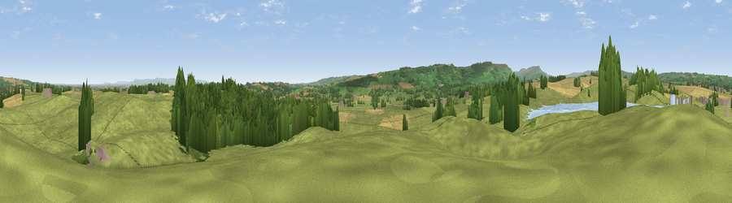

Viewpoint near Thornton Steward
#15768 in England · top 35% of its area beats it · near Thornton StewardThe view, rendered

A 360° render of this exact spot computed from the terrain model, tree cover and land cover — summer colours, afternoon light, calibrated against photographs of famous viewpoints. Real trees, hedges and buildings will differ in detail.
The panorama
Grey silhouette: terrain skyline in each direction (720 bearings, Earth curvature and refraction included). Dashed green: skyline with trees (+15 m) and buildings (+8 m) as obstacles. Blue strip: how far the ground is visible on each bearing.
Where the view opens
Wedge length = distance to the farthest visible ground on that bearing (vegetation-aware). Rings at 10, 25 and 50 km.
What fills the view
67% grassland · 16% woodland · 13% cropland · 2% built-up · 2% water
Angular shares of the visible panorama (visual magnitude), not map area. Landscape diversity 0.43 (0–1 Shannon).
Key numbers
More beautiful places nearby
The staircase of upgrades: each row has a higher view potential than everything closer. Driving times are estimates from straight-line distance, calibrated against real road routing — check an actual route before setting out.
| Place | Direction | Drive | Score |
|---|---|---|---|
| Viewpoint near Constable Burton | WNW · 3 km | ~7 min | 62.0 |
| Sugar Hill | WNW · 3 km | ~7 min | 64.5 |
| Viewpoint near East Witton | SSW · 4 km | ~10 min | 68.2 |
| Viewpoint near East Witton | SW · 5 km | ~11 min | 72.0 |
| Viewpoint near East Witton | WSW · 5 km | ~12 min | 77.8 |
| Viewpoint near Kirby Knowle | E · 27 km | ~43 min | 80.5 |
| Beacon Hill | ENE · 30 km | ~47 min | 84.7 |
| Carlton Bank | ENE · 36 km | ~55 min | 85.1 |
54.28618, -1.71771 · source: screening · position refined by local search. Computed location — check access rights before visiting.